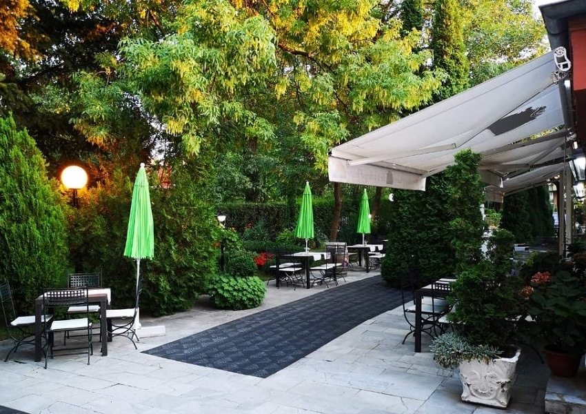
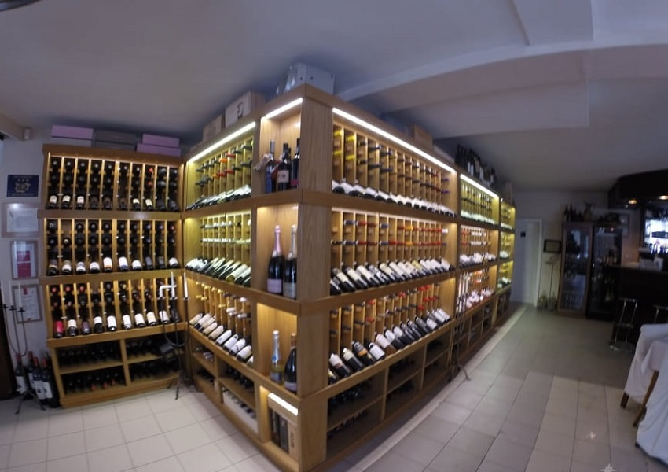
Избрана винена изба
Тополите е толкова за виното, колкото и за кухнята. Стотици етикети, подбрани с грижа — от познати класики до по-редки находки — за да намерите точното вино към вечерята си.
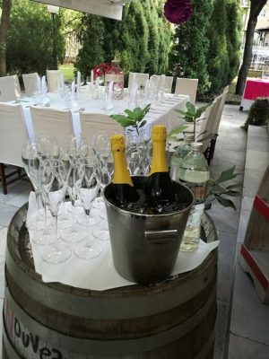
Галерия
Реални снимки на градината, терасата и ястията ще заменят placeholder-ите по-долу.
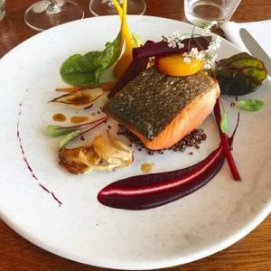
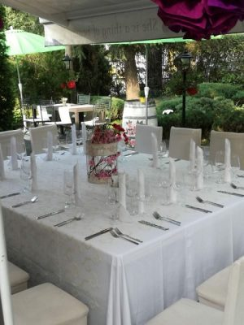
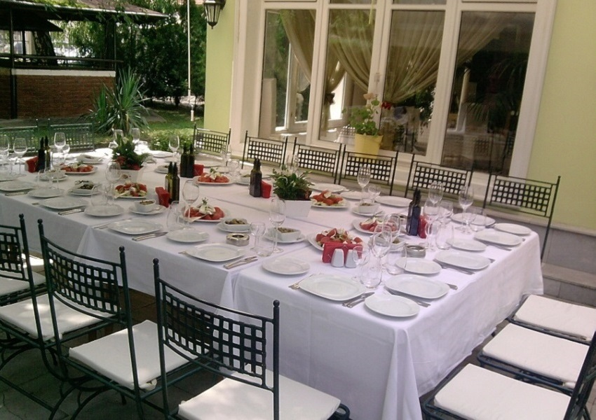
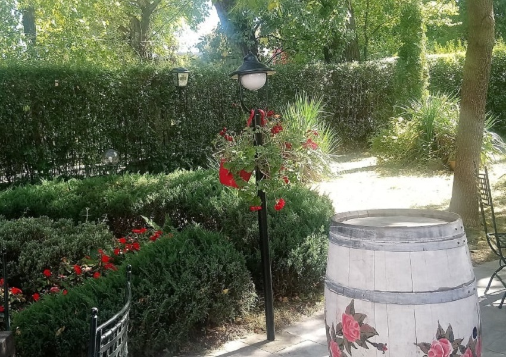
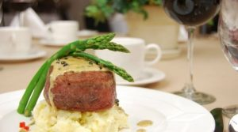
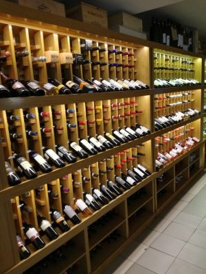
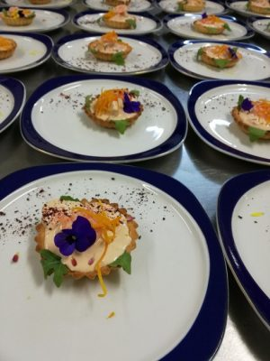
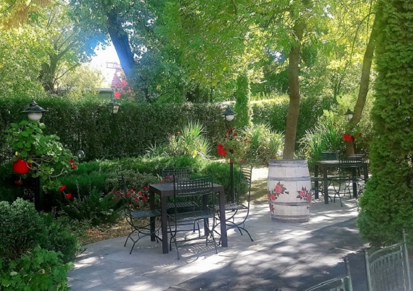
За заведението
Тополите е градинско заведение, замислено за вечери, които минават бавно — сред дървета, топла светлина и внимателно поднесени ястия. Място за гости, които търсят спокойствие и добра кухня, а не забързан ресторантски ритъм. Винената ни листа е подбирана със същото внимание, като част от идентичността на мястото — не просто добавка към менюто.
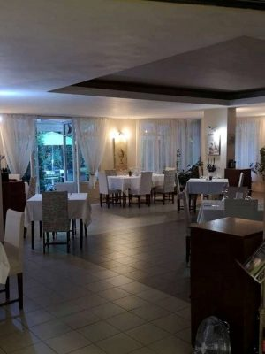
Контакти
Данните предстои да бъдат потвърдени[Адрес на заведението]
[Телефон за резервации]
[Работно време]
Резервирай маса
Тук ще бъде интегрирана система за онлайн резервации